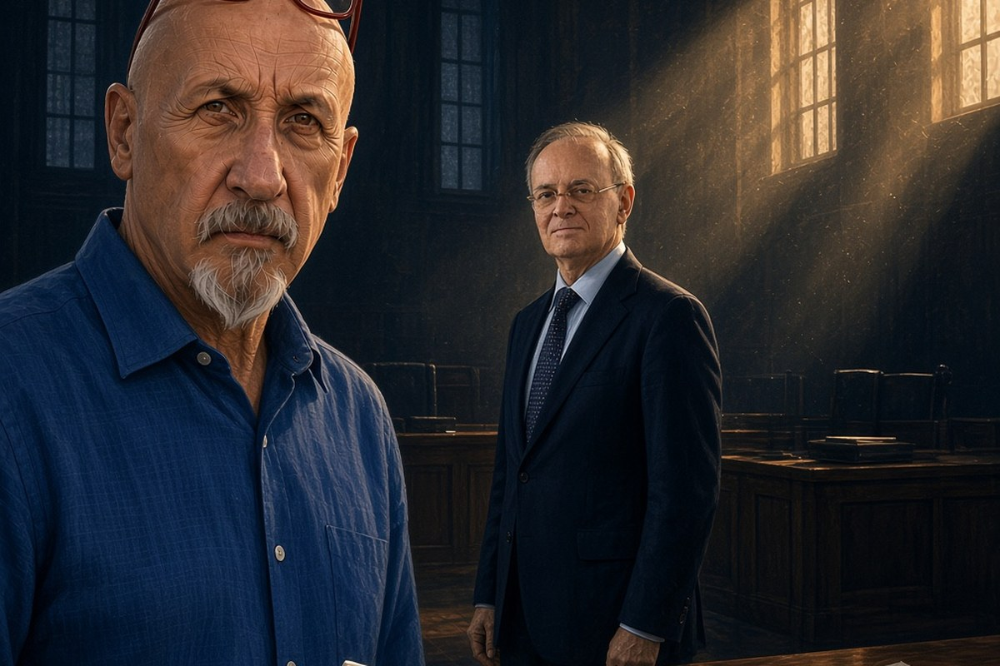

Franco Zanghì
Cronaca · 15 ottobre 2026
Davigo condannato in via definitiva per rivelazione del segreto d'ufficio

La Cassazione ha respinto l'ultimo ricorso dell'ex pubblico ministero di Mani pulite. In mezzo ci sono i verbali segreti di Piero Amara, una loggia di cui non è stata trovata prova e il magistrato che quei verbali li consegnò.
di Franco Zanghì
Il 7 ottobre 2026, in serata, la seconda sezione penale della Corte di cassazione ha respinto l'ultimo ricorso di Piercamillo Davigo. La condanna a un anno e tre mesi per rivelazione del segreto d'ufficio è diventata definitiva. La pena è sospesa, quindi non comporta il carcere. La responsabilità penale, però, adesso è accertata e non si discute più.
Non è un incidente di fine carriera. È l'uomo che per trent'anni ha spiegato agli italiani come doveva funzionare la giustizia, condannato per avere usato male delle carte riservate. Che di quella stagione erano lo strumento principale.
Da dove è partita
Nella primavera del 2020 il pubblico ministero di Milano Paolo Storari consegna a Davigo i verbali resi alla sua procura dall'avvocato Piero Amara. Davigo siede allora nel Consiglio superiore della magistratura. In quei verbali si racconta l'esistenza di una loggia massonica, la loggia Ungheria, che secondo quelle dichiarazioni avrebbe pilotato nomine e incarichi. Sono atti coperti da segreto investigativo.
Nei mesi successivi la notizia comincia a camminare. A Roma, Davigo ne parla con una dozzina di persone, secondo le ricostruzioni delle agenzie: consiglieri del Consiglio superiore della magistratura e parlamentari, fra cui l'allora senatore Nicola Morra. Nei verbali c'è anche il nome di un suo collega, Sebastiano Ardita, che da quel momento si ritrova addosso un sospetto mai passato da un processo. Alla fine quelle carte arrivano ai giornali.
I gradi di giudizio
Il processo si celebra a Brescia, la sede competente quando si giudicano i magistrati di Milano. Primo grado nel 2023: un anno e tre mesi, più 20.000 euro di risarcimento ad Ardita, parte civile. Appello il 7 marzo 2024: condanna confermata.
Poi la Cassazione divide l'imputazione in due. Sul primo capo, l'essersi fatto consegnare quelle carte, la condanna diventa irrevocabile già alla fine del 2024. Sul secondo, la diffusione dei verbali ad altri, viene ordinato un nuovo processo d'appello. Il 29 ottobre 2025 Brescia conferma anche quello. Il 7 ottobre 2026 la Cassazione ha chiuso la porta.
Le motivazioni dell'appello bis sono la parte da tenere a mente. I giudici scrivono che per riportare la vicenda nella legalità a Davigo sarebbe bastato indirizzare Storari alla procura generale di Milano, l'ufficio titolato a informare il Consiglio superiore. Non lo ha fatto. Si è eretto, scrivono, a paladino della legalità senza alcuna legittimazione. Si è messo, cioè, al posto delle regole.
La loggia che non c'era
Il fascicolo nato da quei verbali è stato trasmesso a Perugia ed è stato archiviato: dell'esistenza della loggia Ungheria non è stata trovata prova. Restano sei anni di veleni, di carriere avvelenate e di sospetti dentro il Consiglio superiore della magistratura, per una cosa che negli atti non ha lasciato traccia.
Dove sta il punto
Qui comincia la mia opinione, e la ancoro ai fatti appena elencati. Per anni Davigo è stato la voce più autorevole della linea dura: ha sostenuto in audizione parlamentare il blocco della prescrizione dopo il primo grado, quello entrato nella legge spazzacorrotti del ministro Alfonso Bonafede, e ha proposto di aumentare la pena a chi impugna solo per far passare il tempo. Il Movimento 5 Stelle, il partito di quel ministro, ha costruito su di lui la propria idea di giustizia, al punto che gli fu chiesto se fosse disponibile a prendere il posto di Bonafede al ministero. Disse di no, perché a suo dire i magistrati non devono fare politica: in questo gli do piena ragione, ma solo in questo. È sua anche la frase più citata di quella stagione, non esistono innocenti, esistono solo colpevoli non ancora scoperti, pronunciata parlando di corruzione negli appalti.
Poi è toccato a lui. E quando è toccato a lui ha usato tutto: tre gradi di giudizio, un appello bis, più ricorsi in Cassazione. Ha usato, una per una, le garanzie che la linea da lui sostenuta voleva accorciare per tutti gli altri. Era suo pieno diritto e nessuno glielo contesta. È però la prova migliore che quelle garanzie servono, e che servono a chiunque, anche a chi le considerava un intralcio finché riguardavano gli altri.
Resta un punto, e nasce dalle carte. Chi ha materialmente consegnato quei verbali è stato assolto in via definitiva, perché il fatto non costituisce reato. Chi li ha ricevuti e li ha fatti girare è stato condannato in via definitiva. E la loggia per cui tutto questo è accaduto non è mai stata dimostrata. Che cosa è rimasto in piedi, allora, di quella storia? Una carriera bruciata che non c'entrava niente, un ex magistrato condannato, e una lezione impartita per trent'anni e imparata soltanto adesso.
Fonti
- Il Dubbio, «Loggia Ungheria, definitiva la condanna di Davigo: un anno e tre mesi per rivelazione del segreto d'ufficio», 8 ottobre 2026
- Il Fatto Quotidiano, «Verbali Amara, la Cassazione conferma la condanna all'ex pm Davigo», 8 ottobre 2026
- Il Giornale, «Caso Amara, definitiva la condanna a Davigo: un anno e tre mesi per i verbali sulla loggia Ungheria», 8 ottobre 2026
- Agi, «Davigo non poteva ergersi a paladino della legalità», motivazioni dell'appello bis di Brescia, 21 gennaio 2026
- Sky TG24, «Piercamillo Davigo condannato a un anno e 3 mesi dalla Corte d'appello di Brescia», 7 marzo 2024
- Il Fatto Quotidiano, «Verbali di Amara, il pm di Milano Paolo Storari assolto», 7 marzo 2022
- Il Fatto Quotidiano, «Verbali di Amara, il pm Storari assolto anche in appello», 3 novembre 2022
- La Nazione, «Perugia, archiviata l'indagine sulla loggia Ungheria»
Il numero delle persone con cui Davigo parlò di quei verbali, una dozzina, è quello riportato dalle ricostruzioni delle agenzie e non risulta da un atto. Alla data di pubblicazione le motivazioni della decisione della Cassazione del 7 ottobre 2026 non risultano ancora depositate.